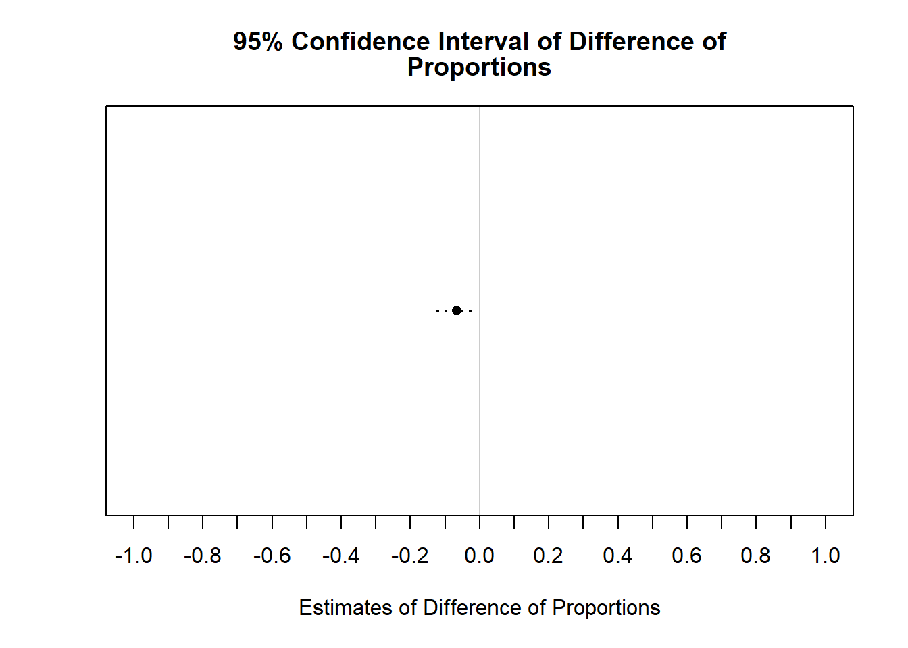
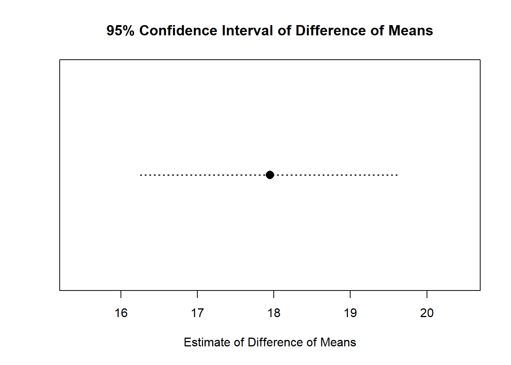
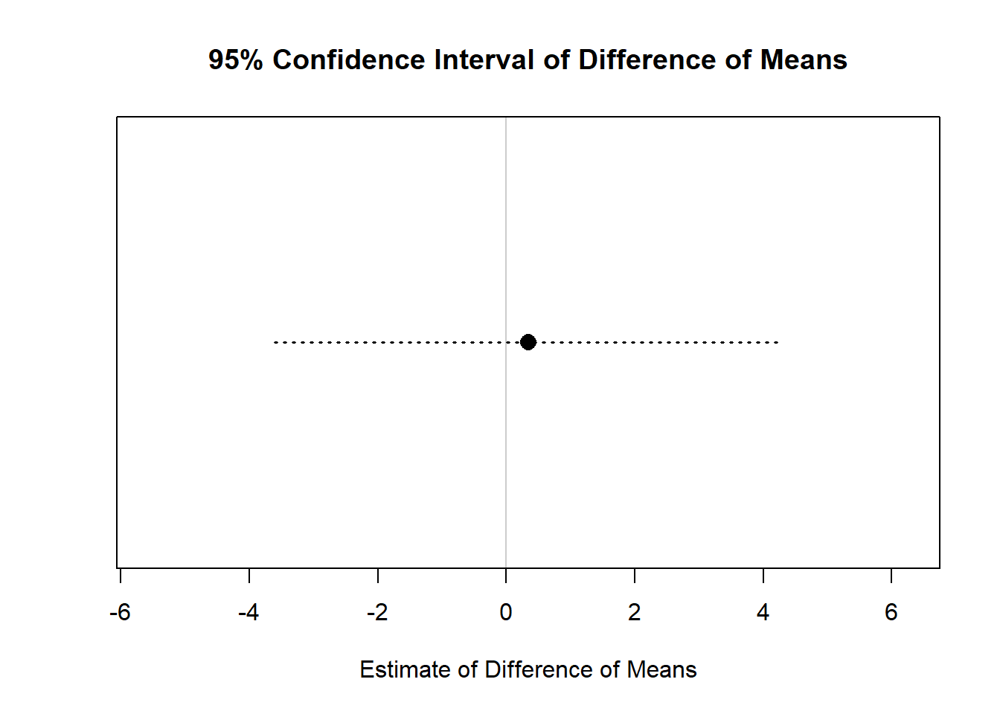
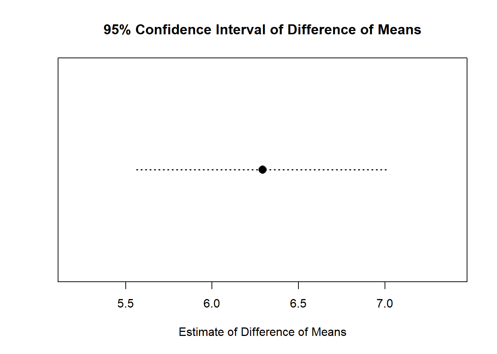
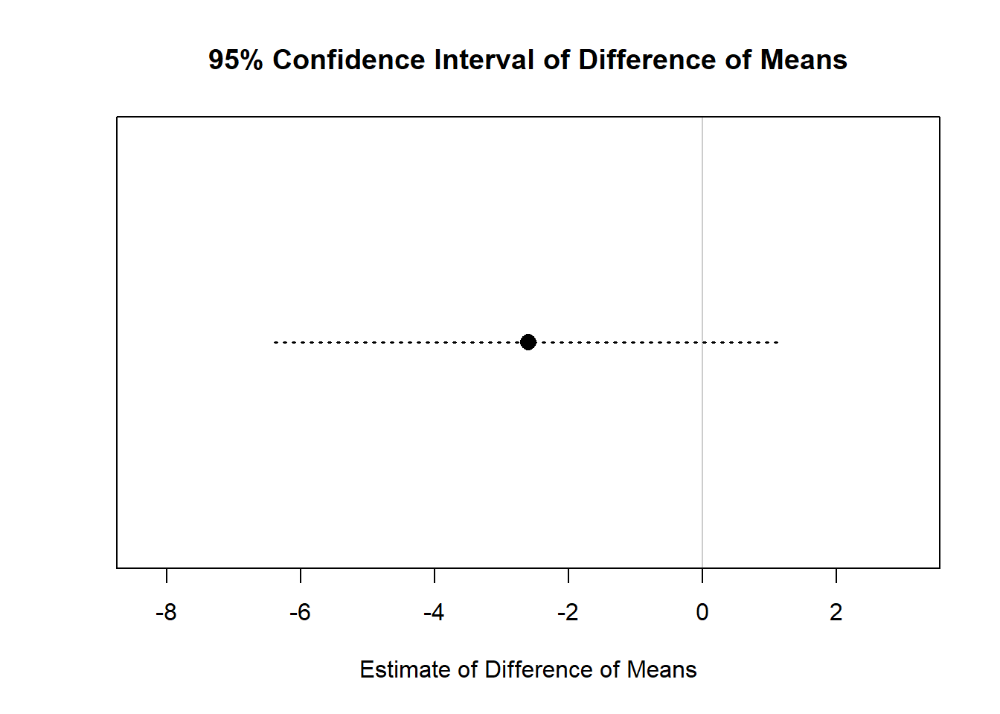
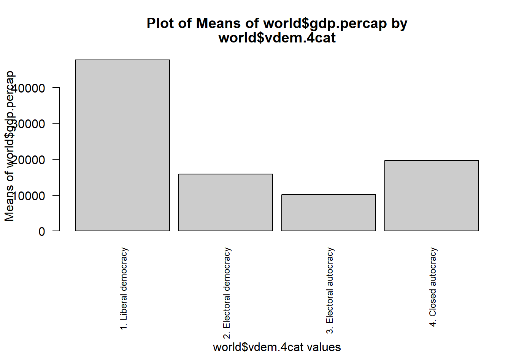

library(RCPA3)t-tests and ANOVAs
Agenda:
1. Install Packages and Libraries:
New packages to install:
No new packages to install this time!
Load libraries!
2. Remember compmeansC()
compmeansC(world$gdp.percap, world$vdem.4cat)===========================================================================
Mean Comparison Analysis
===========================================================================
Table: Mean Values of world$gdp.percap by world$vdem.4cat
Mean N St. Dev.
----------------------- --------- ---- ---------
1. Liberal democracy 47782.35 31 20101.71
2. Electoral democracy 15899.29 55 11302.07
3. Electoral autocracy 10179.81 59 14088.63
4. Closed autocracy 19711.39 23 23902.22
Total 20295.74 168 20997.71One or more text labels for bars is long. Consider abbreviating with ivlabs argument.
We can see the mean GDP per capita for each of the 4 regime type categories. But is the difference significant?? The compmeansC() function can’t tell us the significance; it’s more descriptive.
3. Testing Differences in Proportions
Instead, we can do a “one-sample test” of proportions to see if the proportion of cases for a given category is significantly different from our hypothesized proportion:
testpropsC(world$vdem.4cat, .25, response = "1. Liberal democracy")===========================================================================
Difference of Proportions Test
===========================================================================
Test Framework:
Null hypo: Prop(1. Liberal democracy|world$vdem.4cat) - 0.25 = 0
Alt. hypo: Prop(1. Liberal democracy|world$vdem.4cat) - 0.25 != 0
Table: Descriptive Statistics
world$vdem.4cat 0.25
--------------------------- ---------------- -----
Prop(1. Liberal democracy) 0.185 0.25
N 168.000
Table: Z-Test Statistics
Diff. of Props. SE of Diff. Z-statistic P-value (2-tailed)
---------------- ------------ ------------ -------------------
-0.0655 0.030 -2.183 0.0291
Table: 95% Confidence Interval of Difference of Proportions
Lower Bound Point Estimate Upper Bound
------------ --------------- ------------
-0.124 -0.0655 -0.007
Is the proportion of Liberal Democracies significantly different from the actual proportion of Liberal Democracies in the world?
4. Testing Differences in Means
We use what’s called a “t-test” to test when means are significantly different
- DV: Continuous/Interval
- IV: Dichotomous
There are 3 types of t-tests:
- One-sample t-test
- Two-sample t-test
- Paired-sample t-test
One-Sample t-test
One-sample t-test: Is the mean of Y significantly different from a specific value?
testmeansC(states$vep20.turnout, 50)===========================================================================
Difference of Means Test
===========================================================================
Test Framework and Assumptions
Null Hypothesis: states$vep20.turnout - 50 = 0
Alt. Hypothesis: states$vep20.turnout - 50 != 0
Population standard deviation is unknown. Not assuming that samples have equal variances.
Table: Descriptive Statistics
Mean N St. Dev.
--------------------- ------ ------ ---------
states$vep20.turnout 67.95 50.00 5.97
Table: t-Test Statistics
Diff. of Means SE of Diff. t-Statistic DF P-value (2-tailed)
--------------- ------------ ------------ ------ -------------------
17.95 0.84 21.25 49.00 2.2e-26
Table: 95% Confidence Interval of Difference of Means
Lower Bound Point Estimate Upper Bound
------------ --------------- ------------
16.25 17.95 19.65
Was mean voter turnout by state in 2020 significantly different from 50%?
Two-Sample t-test
Two-sample t-test: Is the mean of Y (when the IV=0) significantly different from the mean of Y (when the IV=1)?
testmeansC(dv= states$vep20.turnout, iv=states$term.limits)===========================================================================
Difference of Means Test
===========================================================================
Test Framework and Assumptions
Null Hypothesis: Mean(states$vep20.turnout|No) - Mean(states$vep20.turnout|Yes) = 0
Alt. Hypothesis: Mean(states$vep20.turnout|No) - Mean(states$vep20.turnout|Yes) != 0
Population standard deviation is unknown. Not assuming that samples have equal variances.
Table: Descriptive Statistics
Mean N St. Dev.
---- ------ ------ ---------
No 68.05 35.00 5.90
Yes 67.71 15.00 6.33
Table: t-Test Statistics
Diff. of Means SE of Diff. t-Statistic DF P-value (2-tailed)
--------------- ------------ ------------ ------ -------------------
0.34 1.92 0.18 24.00 0.86
Table: 95% Confidence Interval of Difference of Means
Lower Bound Point Estimate Upper Bound
------------ --------------- ------------
-3.61 0.34 4.30
Was mean voter turnout in 2020 among states with term limits significantly different from turnout among states without term limits?
Paired samples t-test
Paired-samples t-test: Is the mean of Y1 significantly different from the mean of a related variable, Y2? (E.g., Pre-test vs. Post-test). Even though we don’t specify an X variable, the dichotomous IV is implicit here.
Instead of each of the Y variables being unrelated columns, like this:
| ID | Y1 | Y2 |
|---|---|---|
| Observation 1 | 111 | 222 |
| Observation 2 | 333 | 444 |
| Observation 3 | 555 | 666 |
Imagine the data is rearranged to look like this:
| ID | Value | Which Y? |
|---|---|---|
| Observation 1 | 111 | Y1 |
| Observation 1 | 222 | Y2 |
| Observation 2 | 333 | Y1 |
| Observation 2 | 444 | Y2 |
| Observation 3 | 555 | Y1 |
| Observation 3 | 666 | Y2 |
testmeansC(states$vep20.turnout, states$vep16.turnout, paired = T)===========================================================================
Difference of Means Test
===========================================================================
Test Framework and Assumptions
Null Hypothesis: states$vep20.turnout - states$vep16.turnout = 0
Alt. Hypothesis: states$vep20.turnout - states$vep16.turnout != 0
Population standard deviation is unknown.
Observations are paired.
Table: Descriptive Statistics
Mean N St. Dev.
--------------------- ------ ------ ---------
states$vep20.turnout 67.95 50.00 5.97
states$vep16.turnout 61.66 50.00 6.38
Table: t-Test Statistics
Diff. of Means SE of Diff. t-Statistic DF P-value (2-tailed)
--------------- ------------ ------------ ------ -------------------
6.29 0.36 17.31 49.00 1.6e-22
Table: 95% Confidence Interval of Difference of Means
Lower Bound Point Estimate Upper Bound
------------ --------------- ------------
5.56 6.29 7.02
Was mean voter turnout in 2020 significantly different from mean voter turnout in 2016?
load("Datasets/testScoresData.RData")testmeansC(testScores$score.pre, testScores$score.post, paired = T)===========================================================================
Difference of Means Test
===========================================================================
Test Framework and Assumptions
Null Hypothesis: testScores$score.pre - testScores$score.post = 0
Alt. Hypothesis: testScores$score.pre - testScores$score.post != 0
Population standard deviation is unknown.
Observations are paired.
Table: Descriptive Statistics
Mean N St. Dev.
---------------------- ------ ------ ---------
testScores$score.pre 87.73 15.00 6.25
testScores$score.post 90.33 15.00 5.12
Table: t-Test Statistics
Diff. of Means SE of Diff. t-Statistic DF P-value (2-tailed)
--------------- ------------ ------------ ------ -------------------
-2.60 1.77 -1.47 14.00 0.16
Table: 95% Confidence Interval of Difference of Means
Lower Bound Point Estimate Upper Bound
------------ --------------- ------------
-6.40 -2.60 1.20
Was mean pre-test score significantly different from mean post-test score for that fake class data I showed you?
But what if we have multiple categories in the IV??
5. Analysis of Variance Tests (ANOVAs)
T-tests require an explicit or implicit dichotomous IV. So, when we have multiple categories we need a different test:
ANOVAs (Analysis of Variance):
- DV: Continuous/Interval
- IV: Nominal or Ordinal
compmeansC(world$gdp.percap, world$vdem.4cat, anova = T)===========================================================================
Mean Comparison Analysis
===========================================================================
Table: Mean Values of world$gdp.percap by world$vdem.4cat
Mean N St. Dev.
----------------------- --------- ---- ---------
1. Liberal democracy 47782.35 31 20101.71
2. Electoral democracy 15899.29 55 11302.07
3. Electoral autocracy 10179.81 59 14088.63
4. Closed autocracy 19711.39 23 23902.22
Total 20295.74 168 20997.71
---------------------------------------------------------------------------
Analysis of Variance (ANOVA)
---------------------------------------------------------------------------
Table: Analysis of Variance (Response: world$gdp.percap)
Df Sum Sq Mean Sq F value Pr(>F)
---------- ------- -------- -------- -------- -------
iv 3.00 3.1e+10 1.0e+10 38.72 0.00
Residuals 164.00 4.3e+10 2.6e+08 NA NAOne or more text labels for bars is long. Consider abbreviating with ivlabs argument.
We can add an ANOVA test option to the compmeansC() function but it’s not great. The anova = T option tells us whether the relationship as a whole is significant, but we don’t know what’s driving that significance because it doesn’t break things down by the individual categories of the IV.
That’s where aov() makes a difference…
anova.model1 <- aov(world$gdp.percap~world$vdem.4cat)The aov() function runs an ANOVA model, too. And, importantly, we can save this model as an object called anova.model1 (or whatever) so we can call it again. Notice that we don’t include a comma, though: the syntax is DV~IV (with the tilde).
Let’s see the model:
summary(anova.model1) Df Sum Sq Mean Sq F value Pr(>F)
world$vdem.4cat 3 3.053e+10 1.018e+10 38.72 <2e-16 ***
Residuals 164 4.310e+10 2.628e+08
---
Signif. codes: 0 '***' 0.001 '**' 0.01 '*' 0.05 '.' 0.1 ' ' 1
1 observation deleted due to missingnessGetting a summary of the anova model object gives us the p-value of the model as a whole (just like compmeansC() with the anova = T option). But since we’ve stored it as an object, we have a additional opportunities…
Tukey Test: Post-Hoc tests with ANOVAs
Here’s the cool part of creating a model object with aov(): we can run a “post-hoc test” (a test after the fact) on it to see how each of the IV categories relates to each of the DV categories.
This is the Tukey HSD (“Honestly Significant Difference”) test.
TukeyHSD(anova.model1) Tukey multiple comparisons of means
95% family-wise confidence level
Fit: aov(formula = world$gdp.percap ~ world$vdem.4cat)
$`world$vdem.4cat`
diff lwr upr
2. Electoral democracy-1. Liberal democracy -31883.064 -41333.3210 -22432.807
3. Electoral autocracy-1. Liberal democracy -37602.541 -46936.6099 -28268.473
4. Closed autocracy-1. Liberal democracy -28070.964 -39650.9674 -16490.960
3. Electoral autocracy-2. Electoral democracy -5719.477 -13606.2925 2167.338
4. Closed autocracy-2. Electoral democracy 3812.100 -6636.5122 14260.713
4. Closed autocracy-3. Electoral autocracy 9531.578 -812.0669 19875.222
p adj
2. Electoral democracy-1. Liberal democracy 0.0000000
3. Electoral autocracy-1. Liberal democracy 0.0000000
4. Closed autocracy-1. Liberal democracy 0.0000000
3. Electoral autocracy-2. Electoral democracy 0.2396615
4. Closed autocracy-2. Electoral democracy 0.7795181
4. Closed autocracy-3. Electoral autocracy 0.0826533The TukeyHSD() test output is key to our model interpretation. It lists each category comparison within the IV (e.g., “2. Electoral democracy-1. Liberal democracy”) and provides some stats: the difference in mean DV world$gdp.percap between them, the lower (lwr) and upper (upr) bounds of the confidence interval, and an adjusted p-value (p adj) for each individual comparison.